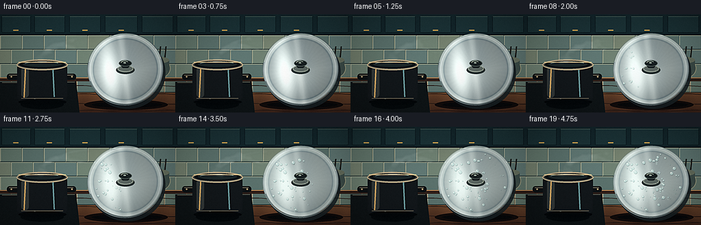
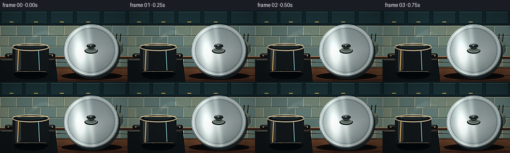

CODING AGENTS AS PIXEL WORLD MODELS
traex/DeepSeek-V4.1-Flash · phygen_103
点击播放 · 原生 RGB 像素
逐轮保存的候选
回放视频、检查图与代码变化。
每份候选均可单独播放。实际图片检查记录在下方工具轨迹中。
候选 01播放与检查图
点击播放 · 原生 RGB 像素

展开代码变化
--- 上一保存版本
+++ 本次保存版本
@@ -0,0 +1,472 @@
+from __future__ import annotations
+
+import math
+from pathlib import Path
+
+import numpy as np
+from PIL import Image, ImageDraw, ImageFilter
+from scipy.ndimage import gaussian_filter
+
+import artifact_io
+
+
+W, H = 256, 144
+FRAMES = 20
+S = 4
+WP, HP = W * S, H * S
+ROOT = Path(__file__).resolve().parent
+
+
+def smoothstep(value: np.ndarray | float) -> np.ndarray | float:
+ value = np.clip(value, 0.0, 1.0)
+ return value * value * (3.0 - 2.0 * value)
+
+
+def rgba(color: tuple[int, int, int], alpha: int = 255) -> tuple[int, int, int, int]:
+ return color[0], color[1], color[2], alpha
+
+
+def scaled_box(box: tuple[float, float, float, float]) -> tuple[int, int, int, int]:
+ return tuple(int(round(v * S)) for v in box)
+
+
+def bezier(points: tuple[np.ndarray, np.ndarray, np.ndarray, np.ndarray], t: float) -> np.ndarray:
+ u = 1.0 - t
+ return u**3 * points[0] + 3.0 * u * u * t * points[1] + 3.0 * u * t * t * points[2] + t**3 * points[3]
+
+
+def make_background() -> Image.Image:
+ yy, xx = np.mgrid[0:HP, 0:WP].astype(np.float32)
+ yn = yy / (HP - 1)
+ xn = xx / (WP - 1)
+
+ wall_top = np.array([34, 47, 49], dtype=np.float32)
+ wall_bottom = np.array([92, 103, 93], dtype=np.float32)
+ wall_t = smoothstep(yn / 0.66)
+ image = wall_top[None, None, :] * (1.0 - wall_t[..., None]) + wall_bottom[None, None, :] * wall_t[..., None]
+
+ # Soft kitchen light from upper left and a cool window reflection from the right.
+ warm = np.exp(-(((xn - 0.12) / 0.38) ** 2 + ((yn - 0.12) / 0.34) ** 2))
+ cool = np.exp(-(((xn - 0.91) / 0.23) ** 2 + ((yn - 0.34) / 0.46) ** 2))
+ image += warm[..., None] * np.array([38.0, 29.0, 13.0])
+ image += cool[..., None] * np.array([-4.0, 10.0, 18.0])
+
+ counter_top = 0.655
+ counter_mask = np.clip((yn - counter_top) * 95.0, 0.0, 1.0)[..., None]
+ wood_top = np.array([151, 104, 66], dtype=np.float32)
+ wood_bottom = np.array([66, 39, 27], dtype=np.float32)
+ wood_t = np.clip((yn - counter_top) / (1.0 - counter_top), 0.0, 1.0)[..., None]
+ wood = wood_top * (1.0 - wood_t) + wood_bottom * wood_t
+ grain = 6.0 * np.sin(xx * 0.014 + yy * 0.035) + 3.5 * np.sin(xx * 0.043 - yy * 0.008)
+ wood += grain[..., None] * np.array([1.0, 0.72, 0.48])
+ image = image * (1.0 - counter_mask) + wood * counter_mask
+
+ base = Image.fromarray(np.clip(image, 0, 255).astype(np.uint8), "RGB").convert("RGBA")
+ draw = ImageDraw.Draw(base, "RGBA")
+
+ # Upper cabinets provide a clear kitchen setting without competing with the action.
+ draw.rectangle(scaled_box((0, 0, W, 30)), fill=rgba((25, 42, 45)))
+ for index, x0 in enumerate((0, 48, 99, 151, 205)):
+ x1 = (47, 97, 149, 203, 255)[index]
+ panel = scaled_box((x0 + 2, 2, x1 - 2, 27))
+ draw.rounded_rectangle(panel, radius=2 * S, fill=rgba((34, 55, 57)), outline=rgba((18, 31, 34)), width=S)
+ draw.line(
+ [(panel[0] + S, panel[1] + S), (panel[2] - S, panel[1] + S)],
+ fill=rgba((68, 88, 83), 105),
+ width=S,
+ )
+ if index < 4:
+ cx = (x0 + x1) // 2
+ draw.rounded_rectangle(
+ scaled_box((cx - 4.0, 22.5, cx + 4.0, 24.0)),
+ radius=S,
+ fill=rgba((183, 148, 82), 205),
+ )
+ draw.rectangle(scaled_box((0, 29, W, 31)), fill=rgba((18, 27, 29), 220))
+
+ # Sage ceramic backsplash.
+ tile_w, tile_h = 32.0, 21.0
+ palette = ((102, 119, 109), (112, 127, 114), (94, 113, 108), (117, 127, 111), (99, 119, 115))
+ row = 0
+ y = 30.5
+ while y < 94.0:
+ offset = -tile_w / 2.0 if row % 2 else 0.0
+ col = 0
+ x = offset
+ while x < W:
+ color = palette[(row * 3 + col * 2) % len(palette)]
+ box = scaled_box((x + 0.6, y + 0.6, x + tile_w - 0.6, y + tile_h - 0.6))
+ draw.rectangle(box, fill=rgba(color, 245))
+ draw.line([(box[0], box[1]), (box[2], box[1])], fill=rgba((151, 158, 139), 62), width=S)
+ draw.line([(box[0], box[1]), (box[0], box[3])], fill=rgba((164, 169, 148), 42), width=S)
+ draw.line([(box[0], box[3]), (box[2], box[3])], fill=rgba((40, 54, 52), 80), width=S)
+ col += 1
+ x += tile_w
+ row += 1
+ y += tile_h
+
+ # Counter edge, wood seams and a few restrained utensil silhouettes.
+ draw.rectangle(scaled_box((0, 92.5, W, 98.0)), fill=rgba((57, 37, 28), 210))
+ draw.line(scaled_box((0, 93.0, W, 93.0)), fill=rgba((202, 156, 108), 120), width=S)
+ for y0 in (105.0, 117.0, 131.0, 141.0):
+ pts = []
+ for x in range(-8, W + 10, 5):
+ yy0 = y0 + 0.7 * math.sin(x * 0.11 + y0)
+ pts.append((int(x * S), int(yy0 * S)))
+ draw.line(pts, fill=rgba((45, 27, 20), 45), width=S)
+
+ # A crock and a soft jar in the background reinforce scale and place.
+ draw.ellipse(scaled_box((209, 63, 249, 95)), fill=rgba((72, 84, 78), 175), outline=rgba((147, 148, 125), 75), width=S)
+ draw.rectangle(scaled_box((211, 67, 247, 82)), fill=rgba((68, 81, 76), 170))
+ draw.ellipse(scaled_box((211, 62, 247, 72)), fill=rgba((104, 111, 96), 180))
+ for x0 in (216, 224, 233, 241):
+ draw.line([(x0 * S, 63 * S), ((x0 + 1.5) * S, 47 * S)], fill=rgba((39, 39, 34), 155), width=2 * S)
+ draw.ellipse(scaled_box((154, 68, 190, 94)), fill=rgba((96, 112, 103), 95), outline=rgba((190, 196, 168), 55), width=S)
+
+ return base
+
+
+def draw_stove_and_pot(image: Image.Image) -> Image.Image:
+ draw = ImageDraw.Draw(image, "RGBA")
+
+ # Dark induction cooktop and the cast-iron pot.
+ draw.polygon(
+ [(0, 99 * S), (111 * S, 98 * S), (116 * S, 144 * S), (0, 144 * S)],
+ fill=rgba((21, 24, 24), 248),
+ )
+ draw.line([(3 * S, 100 * S), (109 * S, 99 * S)], fill=rgba((121, 119, 103), 68), width=S)
+ for r in (32, 27, 22):
+ draw.ellipse(scaled_box((60 - r, 112 - r * 0.25, 60 + r, 112 + r * 0.25)), outline=rgba((87, 80, 70), 35), width=S)
+ draw.ellipse(scaled_box((30, 125, 93, 139)), fill=rgba((8, 10, 10), 115))
+
+ # Handles behind the pot body.
+ draw.rounded_rectangle(scaled_box((10, 87, 30, 96)), radius=4 * S, fill=rgba((18, 20, 20), 245))
+ draw.rounded_rectangle(scaled_box((92, 87, 111, 96)), radius=4 * S, fill=rgba((18, 20, 20), 245))
+ draw.line([(13 * S, 89 * S), (27 * S, 89 * S)], fill=rgba((125, 118, 102), 100), width=S)
+ draw.line([(94 * S, 89 * S), (107 * S, 89 * S)], fill=rgba((125, 118, 102), 100), width=S)
+
+ draw.rounded_rectangle(scaled_box((25, 72, 98, 127)), radius=7 * S, fill=rgba((24, 26, 27), 255))
+ draw.rectangle(scaled_box((26, 80, 97, 122)), fill=rgba((25, 27, 28), 255))
+
+ # Broad, restrained reflections on the black enamel.
+ draw.rounded_rectangle(scaled_box((31, 77, 42, 122)), radius=5 * S, fill=rgba((58, 61, 59), 120))
+ draw.line([(37 * S, 78 * S), (35 * S, 122 * S)], fill=rgba((204, 163, 104), 82), width=2 * S)
+ draw.line([(77 * S, 78 * S), (79 * S, 121 * S)], fill=rgba((105, 145, 148), 75), width=2 * S)
+ draw.arc(scaled_box((29, 75, 94, 127)), 72, 112, fill=rgba((118, 123, 114), 75), width=2 * S)
+ draw.line([(31 * S, 123 * S), (92 * S, 123 * S)], fill=rgba((112, 104, 88), 70), width=S)
+
+ # Metallic rim and dark steaming interior.
+ draw.ellipse(scaled_box((24, 66, 99, 82)), fill=rgba((73, 73, 66), 255), outline=rgba((174, 159, 130), 190), width=2 * S)
+ draw.ellipse(scaled_box((28, 68, 95, 79)), fill=rgba((16, 20, 21), 255))
+ draw.ellipse(scaled_box((33, 69, 90, 77)), fill=rgba((35, 43, 43), 255))
+ draw.arc(scaled_box((35, 69, 88, 77)), 198, 332, fill=rgba((135, 152, 148), 105), width=S)
+ draw.line([(27 * S, 70 * S), (96 * S, 70 * S)], fill=rgba((231, 201, 149), 95), width=S)
+
+ # Rivets and contact shadow.
+ for cx in (16.5, 105.0):
+ draw.ellipse(scaled_box((cx - 1.2, 90.2, cx + 1.2, 92.6)), fill=rgba((162, 146, 114), 190))
+ draw.ellipse(scaled_box((27, 124, 97, 133)), fill=rgba((7, 8, 8), 125))
+ return image
+
+
+def draw_lid_shadow(image: Image.Image) -> Image.Image:
+ draw = ImageDraw.Draw(image, "RGBA")
+ draw.ellipse(scaled_box((123, 125, 245, 140)), fill=rgba((25, 14, 10), 105))
+ draw.ellipse(scaled_box((134, 128, 237, 137)), fill=rgba((12, 9, 8), 115))
+ return image
+
+
+def make_drop_specs() -> list[dict[str, float]]:
+ rng = np.random.default_rng(91827)
+ drops: list[dict[str, float]] = []
+ for _ in range(84):
+ angle = rng.uniform(0.0, math.tau)
+ radius = 0.82 * math.sqrt(rng.uniform(0.0, 1.0))
+ u = radius * math.cos(angle)
+ v = radius * math.sin(angle)
+ leftness = np.clip((0.35 - u) / 1.2, 0.0, 1.0)
+ activation = 3.2 + 10.5 * (1.0 - leftness) + rng.uniform(-1.2, 2.4)
+ drops.append(
+ {
+ "u": float(u),
+ "v": float(v),
+ "activation": float(activation),
+ "size": float(rng.uniform(0.55, 1.9) ** 1.45),
+ "run": float(rng.uniform(0.0, 1.0)),
+ "delay": float(rng.uniform(0.0, 1.0)),
+ }
+ )
+ return drops
+
+
+DROPS = make_drop_specs()
+
+
+def render_lid(progress: float) -> Image.Image:
+ layer = Image.new("RGBA", (WP, HP), (0, 0, 0, 0))
+ draw = ImageDraw.Draw(layer, "RGBA")
+ cx, cy = 183.0, 80.5
+ rx, ry = 55.5, 53.0
+ theta_lid = math.radians(-7.0)
+
+ # Dark sidewall makes the disc feel like a real, propped lid.
+ draw.ellipse(scaled_box((cx - rx + 3, cy - ry + 5, cx + rx + 3, cy + ry + 5)), fill=rgba((31, 37, 38), 220))
+
+ y0, y1 = int((cy - ry - 7) * S), int((cy + ry + 8) * S)
+ x0, x1 = int((cx - rx - 7) * S), int((cx + rx + 8) * S)
+ yy, xx = np.mgrid[y0:y1, x0:x1].astype(np.float32)
+ px = xx / S
+ py = yy / S
+ dx = px - cx
+ dy = py - cy
+ ct, st = math.cos(theta_lid), math.sin(theta_lid)
+ xr = dx * ct + dy * st
+ yr = -dx * st + dy * ct
+ rho = np.sqrt((xr / rx) ** 2 + (yr / ry) ** 2)
+ theta = np.arctan2(yr / ry, xr / rx)
+ mask = rho <= 1.0
+
+ # Polished steel built from broad reflected light bands rather than a flat fill.
+ base_v = 0.48 + 0.10 * np.cos(theta - 2.15) + 0.10 * np.clip(1.0 - rho, 0.0, 1.0)
+ left_band = np.exp(-(((xr / rx + 0.42) / 0.24) ** 2)) * (0.25 + 0.15 * np.cos(yr / ry * 2.2))
+ center_band = np.exp(-(((xr / rx + 0.02) / 0.095) ** 2)) * 0.18
+ lower_dark = np.clip((yr / ry - 0.05) * 0.22, 0.0, 0.18)
+ warm_band = np.exp(-(((xr / rx - 0.52) / 0.25) ** 2)) * 0.12
+ rim = np.exp(-(((rho - 0.925) / 0.028) ** 2)) * 0.26
+ edge_dark = np.clip((rho - 0.975) / 0.025, 0.0, 1.0) * 0.35
+ brushed = 0.011 * np.sin(rho * 260.0 + theta * 4.0) + 0.006 * np.sin(theta * 41.0)
+ value = np.clip(base_v + left_band + center_band + rim + brushed - lower_dark - edge_dark, 0.16, 0.92)
+
+ color = np.zeros((*value.shape, 3), dtype=np.float32)
+ color[..., 0] = 56.0 + 183.0 * value + 24.0 * warm_band
+ color[..., 1] = 67.0 + 185.0 * value + 10.0 * warm_band
+ color[..., 2] = 72.0 + 178.0 * value - 8.0 * warm_band
+ color[..., 0] += 17.0 * left_band
+ color[..., 1] += 25.0 * left_band
+ color[..., 2] += 27.0 * left_band
+
+ # Fine circular brushing and a narrow inner bevel.
+ inner_bevel = np.exp(-(((rho - 0.845) / 0.022) ** 2))
+ color -= inner_bevel[..., None] * np.array([23.0, 20.0, 17.0])
+ color += np.exp(-(((rho - 0.875) / 0.018) ** 2))[..., None] * np.array([25.0, 27.0, 25.0])
+
+ # Condensation haze arrives from the left contact area and spreads right.
+ fog_noise = gaussian_filter(np.random.default_rng(771).normal(size=(HP // 8, WP // 8)), sigma=5.0)
+ fog_noise = np.array(Image.fromarray(((fog_noise - fog_noise.min()) / (np.ptp(fog_noise) + 1e-6) * 255).astype(np.uint8)).resize((WP, HP), Image.Resampling.BICUBIC), dtype=np.float32) / 255.0
+ fog_noise = fog_noise[y0:y1, x0:x1]
+ fog_strength = float(smoothstep((progress - 0.14) / 0.60))
+ spread = smoothstep((progress - 0.20) / 0.65)
+ leftness = np.clip((0.75 - xr / rx) / 1.6, 0.0, 1.0)
+ fog_alpha = mask * fog_strength * (0.10 + 0.10 * leftness + 0.07 * spread) * (0.68 + 0.55 * fog_noise)
+ fog_color = np.array([190.0, 207.0, 202.0], dtype=np.float32)
+ color = color * (1.0 - fog_alpha[..., None]) + fog_color * fog_alpha[..., None]
+
+ region = np.zeros((y1 - y0, x1 - x0, 4), dtype=np.uint8)
+ region[..., :3] = np.clip(color, 0, 255).astype(np.uint8)
+ region[..., 3] = (mask * 255).astype(np.uint8)
+ layer.alpha_composite(Image.fromarray(region, "RGBA"), (x0, y0))
+
+ # A slight rim highlight keeps the silhouette legible against the tile.
+ draw.arc(
+ scaled_box((cx - rx + 1, cy - ry + 1, cx + rx - 1, cy + ry - 1)),
+ 192,
+ 342,
+ fill=rgba((221, 235, 228), 145),
+ width=int(1.35 * S),
+ )
+ draw.arc(
+ scaled_box((cx - rx + 1, cy - ry + 1, cx + rx - 1, cy + ry - 1)),
+ 20,
+ 160,
+ fill=rgba((92, 108, 109), 130),
+ width=int(1.15 * S),
+ )
+
+ # Droplets are revealed progressively; the contact side condenses first.
+ drop_layer = Image.new("RGBA", (WP, HP), (0, 0, 0, 0))
+ ddraw = ImageDraw.Draw(drop_layer, "RGBA")
+ frame_number = progress * (FRAMES - 1)
+ for spec in DROPS:
+ age = frame_number - spec["activation"]
+ if age <= 0.0:
+ continue
+ grow = float(smoothstep(age / 3.2))
+ u, v = spec["u"], spec["v"]
+ gx = cx + rx * (u * ct - v * st)
+ gy = cy + ry * (u * st + v * ct)
+ rad = max(0.32, spec["size"] * grow)
+
+ if spec["run"] > 0.79 and age > 3.0:
+ run_len = (age - 3.0) * (1.1 + 2.6 * spec["run"])
+ run_len = min(run_len, 12.0)
+ trail_top = gy + rad * 0.5
+ trail_bottom = gy + run_len
+ ddraw.line(
+ [(int(gx * S), int(trail_top * S)), (int((gx - 0.2) * S), int(trail_bottom * S))],
+ fill=rgba((190, 214, 211), int(74 * min(1.0, grow))),
+ width=max(S, int(rad * 1.2 * S)),
+ )
+
+ shadow_box = scaled_box((gx - rad + 0.25, gy - rad + 0.45, gx + rad + 0.25, gy + rad + 0.45))
+ drop_box = scaled_box((gx - rad, gy - rad, gx + rad, gy + rad))
+ ddraw.ellipse(shadow_box, fill=rgba((25, 38, 39), int(75 * grow)))
+ ddraw.ellipse(drop_box, fill=rgba((181, 211, 208), int(168 * grow)), outline=rgba((92, 122, 122), int(88 * grow)), width=max(1, int(0.35 * S)))
+ if rad > 0.75:
+ hx = gx - rad * 0.35
+ hy = gy - rad * 0.38
+ hr = max(0.22, rad * 0.28)
+ ddraw.ellipse(scaled_box((hx - hr, hy - hr, hx + hr, hy + hr)), fill=rgba((247, 251, 244), int(210 * grow)))
+
+ # Confine droplets to the lid face.
+ drop_arr = np.array(drop_layer)
+ full_mask = np.zeros((HP, WP), dtype=np.uint8)
+ full_mask[y0:y1, x0:x1] = (mask * 255).astype(np.uint8)
+ drop_arr[..., 3] = np.minimum(drop_arr[..., 3], full_mask)
+ layer.alpha_composite(Image.fromarray(drop_arr, "RGBA"))
+
+ # Central handle: a dark Bakelite knob with a bright steel collar.
+ draw.ellipse(scaled_box((cx - 13.5, cy - 5.0, cx + 13.5, cy + 7.0)), fill=rgba((42, 48, 47), 220))
+ draw.ellipse(scaled_box((cx - 11.5, cy - 6.0, cx + 11.5, cy + 4.0)), fill=rgba((93, 101, 96), 230), outline=rgba((189, 197, 184), 105), width=S)
+ draw.rounded_rectangle(scaled_box((cx - 5.8, cy - 10.0, cx + 5.8, cy - 2.0)), radius=3 * S, fill=rgba((26, 31, 31), 255))
+ draw.ellipse(scaled_box((cx - 9.5, cy - 13.5, cx + 9.5, cy - 4.0)), fill=rgba((31, 36, 35), 255), outline=rgba((78, 87, 83), 220), width=S)
+ draw.arc(scaled_box((cx - 7.0, cy - 12.5, cx + 5.0, cy - 5.0)), 196, 325, fill=rgba((185, 194, 181), 125), width=S)
+ draw.ellipse(scaled_box((cx - 3.0, cy - 10.5, cx + 1.0, cy - 8.5)), fill=rgba((146, 158, 151), 100))
+ return layer
+
+
+def draw_steam_layer(progress: float, front: bool = False) -> Image.Image:
+ layer = Image.new("RGBA", (WP, HP), (0, 0, 0, 0))
+ draw = ImageDraw.Draw(layer, "RGBA")
+ rng = np.random.default_rng(4411 if not front else 9917)
+ count = 18 if not front else 7
+ phase_shift = progress * 1.52
+
+ for index in range(count):
+ phase = index / count
+ travel = (phase_shift + phase) % 1.0
+ if front and travel < 0.38:
+ continue
+
+ wobble = math.sin(math.tau * (progress * 0.9 + phase)) * 5.5
+ if not front:
+ p0 = np.array([59.0 + rng.normal(0.0, 2.4), 72.0 + rng.normal(0.0, 1.0)])
+ p1 = np.array([55.0 + wobble * 0.35, 50.0 + rng.normal(0.0, 3.5)])
+ p2 = np.array([91.0 + wobble, 31.0 + rng.normal(0.0, 4.0)])
+ if index % 4 == 0:
+ p3 = np.array([174.0 + rng.normal(0.0, 4.0), 35.0 + rng.normal(0.0, 4.0)])
+ else:
+ p3 = np.array([141.0 + rng.normal(0.0, 3.0), 63.0 + rng.normal(0.0, 2.0)])
+ else:
+ p0 = np.array([128.0, 70.0])
+ p1 = np.array([132.0 + wobble * 0.4, 58.0])
+ p2 = np.array([146.0, 58.0 + wobble * 0.3])
+ p3 = np.array([161.0 + wobble, 48.0])
+
+ seg_start = max(0.0, travel - 0.27)
+ samples = 13
+ base_width = (1.15 + 2.15 * math.sin(math.pi * min(1.0, travel)) ** 0.6) * S
+ alpha_base = (16.0 + 14.0 * math.sin(math.pi * min(1.0, travel))) * (0.55 if front else 1.0)
+ for j in range(samples):
+ ta = seg_start + (travel - seg_start) * j / samples
+ tb = seg_start + (travel - seg_start) * (j + 1) / samples
+ pa = bezier((p0, p1, p2, p3), ta)
+ pb = bezier((p0, p1, p2, p3), tb)
+ local_fade = math.sin(math.pi * (j + 1) / (samples + 1))
+ width = max(S, int(base_width * (0.45 + 0.8 * local_fade)))
+ alpha = int(max(2.0, alpha_base * (0.28 + 0.72 * local_fade)))
+ color = (231, 239, 234, alpha) if ta < 0.55 else (214, 231, 230, alpha)
+ draw.line([(int(pa[0] * S), int(pa[1] * S)), (int(pb[0] * S), int(pb[1] * S))], fill=color, width=width)
+ tip = bezier((p0, p1, p2, p3), travel)
+ radius = (1.5 + 3.5 * math.sin(math.pi * min(1.0, travel))) * S
+ draw.ellipse(
+ (int((tip[0] - radius / S) * S), int((tip[1] - radius * 0.65 / S) * S), int((tip[0] + radius / S) * S), int((tip[1] + radius * 0.65 / S) * S)),
+ fill=(231, 239, 234, int(alpha_base * 0.55)),
+ )
+
+ # Dense warm vapor right above the pot.
+ for index in range(9):
+ phase = index / 9.0
+ rise = (progress * 1.3 + phase) % 1.0
+ x = 59.0 + 7.0 * math.sin(math.tau * (rise * 0.8 + phase)) + rng.normal(0.0, 2.5)
+ y = 71.0 - 13.0 * rise + rng.normal(0.0, 1.5)
+ rad = (5.0 - 2.2 * rise) * S
+ alpha = int(22 * (1.0 - rise))
+ draw.ellipse((int(x * S - rad), int(y * S - rad * 0.6), int(x * S + rad), int(y * S + rad * 0.6)), fill=(240, 240, 223, alpha))
+
+ blur_radius = (1.45 if not front else 1.1) * S
+ layer = layer.filter(ImageFilter.GaussianBlur(blur_radius))
+ return layer
+
+
+def postprocess(image: Image.Image, frame_index: int) -> np.ndarray:
+ arr = np.asarray(image.convert("RGB"), dtype=np.float32) / 255.0
+
+ # Gentle highlight bloom around steam and polished metal.
+ luminance = arr.max(axis=2)
+ bright = np.clip((luminance - 0.70) / 0.30, 0.0, 1.0)
+ bloom_source = (arr * bright[..., None] * 255.0).astype(np.uint8)
+ bloom = np.asarray(Image.fromarray(bloom_source).filter(ImageFilter.GaussianBlur(7.0 * S)), dtype=np.float32) / 255.0
+ arr = np.clip(arr + bloom * 0.11, 0.0, 1.0)
+
+ # Cool shadows, warm highlights, and a restrained filmic contrast curve.
+ lum = arr @ np.array([0.2126, 0.7152, 0.0722], dtype=np.float32)
+ shadow_weight = (1.0 - lum)[..., None]
+ highlight_weight = lum[..., None]
+ arr += shadow_weight * np.array([-0.012, 0.005, 0.018], dtype=np.float32)
+ arr += highlight_weight * np.array([0.018, 0.008, -0.006], dtype=np.float32)
+ arr = np.clip(arr, 0.0, 1.0)
+ arr = arr * arr * (3.0 - 2.0 * arr) * 0.24 + arr * 0.76
+
+ yy, xx = np.mgrid[0:HP, 0:WP].astype(np.float32)
+ nx = (xx - WP * 0.5) / (WP * 0.56)
+ ny = (yy - HP * 0.48) / (HP * 0.61)
+ vignette = np.clip(1.0 - 0.22 * (nx * nx + ny * ny), 0.72, 1.0)
+ arr *= vignette[..., None]
+
+ rng = np.random.default_rng(600 + frame_index)
+ grain = rng.normal(0.0, 0.0065, size=(HP, WP, 1)).astype(np.float32)
+ arr = np.clip(arr + grain, 0.0, 1.0)
+
+ output = Image.fromarray(np.round(arr * 255.0).astype(np.uint8), "RGB").resize((W, H), Image.Resampling.LANCZOS)
+ output = output.filter(ImageFilter.UnsharpMask(radius=1.0, percent=70, threshold=2))
+
+ final = np.asarray(output, dtype=np.int16)
+ output_grain = np.random.default_rng(1700 + frame_index).normal(0.0, 0.85, size=(H, W, 1))
+ final = np.clip(final + output_grain, 0, 255).astype(np.uint8)
+ return final
+
+
+def generate() -> np.ndarray:
+ background = make_background()
+ static_scene = draw_stove_and_pot(background.copy())
+ static_scene = draw_lid_shadow(static_scene)
+ frames: list[np.ndarray] = []
+
+ for frame_index in range(FRAMES):
+ progress = frame_index / (FRAMES - 1)
+ scene = static_scene.copy()
+
+ steam_back = draw_steam_layer(progress, front=False)
+ scene.alpha_composite(steam_back)
+
+ lid = render_lid(progress)
+ scene.alpha_composite(lid)
+
+ if progress > 0.20:
+ contact_strength = float(smoothstep((progress - 0.20) / 0.30))
+ steam_front = draw_steam_layer(progress, front=True)
+ if contact_strength < 0.999:
+ alpha = steam_front.getchannel("A").point(lambda value: int(value * contact_strength))
+ steam_front.putalpha(alpha)
+ scene.alpha_composite(steam_front)
+
+ frames.append(postprocess(scene, frame_index))
+ print(f"rendered {frame_index + 1:02d}/{FRAMES}")
+
+ return np.stack(frames, axis=0)
+
+
+if __name__ == "__main__":
+ video_frames = generate()
+ artifact_io.save(video_frames, ROOT)
+ print(f"saved {video_frames.shape} to {ROOT}")
候选 02播放与检查图
点击播放 · 原生 RGB 像素


展开代码变化
--- 上一保存版本
+++ 本次保存版本
@@ -254,10 +254,10 @@
fog_noise = gaussian_filter(np.random.default_rng(771).normal(size=(HP // 8, WP // 8)), sigma=5.0)
fog_noise = np.array(Image.fromarray(((fog_noise - fog_noise.min()) / (np.ptp(fog_noise) + 1e-6) * 255).astype(np.uint8)).resize((WP, HP), Image.Resampling.BICUBIC), dtype=np.float32) / 255.0
fog_noise = fog_noise[y0:y1, x0:x1]
- fog_strength = float(smoothstep((progress - 0.14) / 0.60))
+ fog_strength = float(smoothstep((progress - 0.10) / 0.58))
spread = smoothstep((progress - 0.20) / 0.65)
leftness = np.clip((0.75 - xr / rx) / 1.6, 0.0, 1.0)
- fog_alpha = mask * fog_strength * (0.10 + 0.10 * leftness + 0.07 * spread) * (0.68 + 0.55 * fog_noise)
+ fog_alpha = mask * fog_strength * (0.16 + 0.18 * leftness + 0.11 * spread) * (0.64 + 0.68 * fog_noise)
fog_color = np.array([190.0, 207.0, 202.0], dtype=np.float32)
color = color * (1.0 - fog_alpha[..., None]) + fog_color * fog_alpha[..., None]
@@ -296,21 +296,21 @@
gy = cy + ry * (u * st + v * ct)
rad = max(0.32, spec["size"] * grow)
- if spec["run"] > 0.79 and age > 3.0:
- run_len = (age - 3.0) * (1.1 + 2.6 * spec["run"])
+ if spec["run"] > 0.70 and age > 2.5:
+ run_len = (age - 2.5) * (1.3 + 3.2 * spec["run"])
run_len = min(run_len, 12.0)
trail_top = gy + rad * 0.5
trail_bottom = gy + run_len
ddraw.line(
[(int(gx * S), int(trail_top * S)), (int((gx - 0.2) * S), int(trail_bottom * S))],
- fill=rgba((190, 214, 211), int(74 * min(1.0, grow))),
+ fill=rgba((203, 225, 221), int(105 * min(1.0, grow))),
width=max(S, int(rad * 1.2 * S)),
)
shadow_box = scaled_box((gx - rad + 0.25, gy - rad + 0.45, gx + rad + 0.25, gy + rad + 0.45))
drop_box = scaled_box((gx - rad, gy - rad, gx + rad, gy + rad))
ddraw.ellipse(shadow_box, fill=rgba((25, 38, 39), int(75 * grow)))
- ddraw.ellipse(drop_box, fill=rgba((181, 211, 208), int(168 * grow)), outline=rgba((92, 122, 122), int(88 * grow)), width=max(1, int(0.35 * S)))
+ ddraw.ellipse(drop_box, fill=rgba((191, 219, 215), int(194 * grow)), outline=rgba((73, 105, 107), int(125 * grow)), width=max(1, int(0.4 * S)))
if rad > 0.75:
hx = gx - rad * 0.35
hy = gy - rad * 0.38
@@ -364,8 +364,8 @@
seg_start = max(0.0, travel - 0.27)
samples = 13
- base_width = (1.15 + 2.15 * math.sin(math.pi * min(1.0, travel)) ** 0.6) * S
- alpha_base = (16.0 + 14.0 * math.sin(math.pi * min(1.0, travel))) * (0.55 if front else 1.0)
+ base_width = (1.4 + 2.65 * math.sin(math.pi * min(1.0, travel)) ** 0.6) * S
+ alpha_base = (45.0 + 42.0 * math.sin(math.pi * min(1.0, travel))) * (0.62 if front else 1.0)
for j in range(samples):
ta = seg_start + (travel - seg_start) * j / samples
tb = seg_start + (travel - seg_start) * (j + 1) / samples
@@ -374,13 +374,13 @@
local_fade = math.sin(math.pi * (j + 1) / (samples + 1))
width = max(S, int(base_width * (0.45 + 0.8 * local_fade)))
alpha = int(max(2.0, alpha_base * (0.28 + 0.72 * local_fade)))
- color = (231, 239, 234, alpha) if ta < 0.55 else (214, 231, 230, alpha)
+ color = (238, 243, 236, alpha) if ta < 0.55 else (221, 235, 233, alpha)
draw.line([(int(pa[0] * S), int(pa[1] * S)), (int(pb[0] * S), int(pb[1] * S))], fill=color, width=width)
tip = bezier((p0, p1, p2, p3), travel)
radius = (1.5 + 3.5 * math.sin(math.pi * min(1.0, travel))) * S
draw.ellipse(
(int((tip[0] - radius / S) * S), int((tip[1] - radius * 0.65 / S) * S), int((tip[0] + radius / S) * S), int((tip[1] + radius * 0.65 / S) * S)),
- fill=(231, 239, 234, int(alpha_base * 0.55)),
+ fill=(238, 243, 236, int(alpha_base * 0.62)),
)
# Dense warm vapor right above the pot.
@@ -390,10 +390,31 @@
x = 59.0 + 7.0 * math.sin(math.tau * (rise * 0.8 + phase)) + rng.normal(0.0, 2.5)
y = 71.0 - 13.0 * rise + rng.normal(0.0, 1.5)
rad = (5.0 - 2.2 * rise) * S
- alpha = int(22 * (1.0 - rise))
+ alpha = int(35 * (1.0 - rise))
draw.ellipse((int(x * S - rad), int(y * S - rad * 0.6), int(x * S + rad), int(y * S + rad * 0.6)), fill=(240, 240, 223, alpha))
- blur_radius = (1.45 if not front else 1.1) * S
+ # A low, curling ribbon physically links the hot pot to the cool lid.
+ if not front:
+ for index in range(3):
+ lift = 1.0 + 2.2 * math.sin(math.tau * (progress * 0.85 + index / 3.0))
+ points = (
+ np.array([76.0 + index * 2.0, 70.5]),
+ np.array([97.0, 67.5 + lift]),
+ np.array([120.0, 70.0 - lift * 0.45]),
+ np.array([145.0, 74.0 + index * 0.7]),
+ )
+ previous = bezier(points, 0.0)
+ for step in range(1, 19):
+ current = bezier(points, step / 18.0)
+ width = max(S, int((1.7 + 1.6 * math.sin(math.pi * step / 18.0)) * S))
+ draw.line(
+ [(int(previous[0] * S), int(previous[1] * S)), (int(current[0] * S), int(current[1] * S))],
+ fill=(229, 240, 235, 34 + index * 5),
+ width=width,
+ )
+ previous = current
+
+ blur_radius = (1.0 if not front else 0.85) * S
layer = layer.filter(ImageFilter.GaussianBlur(blur_radius))
return layer
候选 03播放与检查图
候选 04播放与检查图
点击播放 · 原生 RGB 像素

展开代码变化
--- 上一保存版本
+++ 本次保存版本
@@ -61,7 +61,7 @@
wood += grain[..., None] * np.array([1.0, 0.72, 0.48])
image = image * (1.0 - counter_mask) + wood * counter_mask
- base = Image.fromarray(np.clip(image, 0, 255).astype(np.uint8), "RGB").convert("RGBA")
+ base = Image.fromarray(np.clip(image, 0, 255).astype(np.uint8)).convert("RGBA")
draw = ImageDraw.Draw(base, "RGBA")
# Upper cabinets provide a clear kitchen setting without competing with the action.
@@ -179,19 +179,19 @@
def make_drop_specs() -> list[dict[str, float]]:
rng = np.random.default_rng(91827)
drops: list[dict[str, float]] = []
- for _ in range(84):
+ for _ in range(108):
angle = rng.uniform(0.0, math.tau)
radius = 0.82 * math.sqrt(rng.uniform(0.0, 1.0))
u = radius * math.cos(angle)
v = radius * math.sin(angle)
leftness = np.clip((0.35 - u) / 1.2, 0.0, 1.0)
- activation = 3.2 + 10.5 * (1.0 - leftness) + rng.uniform(-1.2, 2.4)
+ activation = 2.7 + 9.8 * (1.0 - leftness) + rng.uniform(-1.2, 2.4)
drops.append(
{
"u": float(u),
"v": float(v),
"activation": float(activation),
- "size": float(rng.uniform(0.55, 1.9) ** 1.45),
+ "size": float(0.55 + 1.7 * rng.uniform(0.0, 1.0) ** 1.45),
"run": float(rng.uniform(0.0, 1.0)),
"delay": float(rng.uniform(0.0, 1.0)),
}
@@ -264,7 +264,7 @@
region = np.zeros((y1 - y0, x1 - x0, 4), dtype=np.uint8)
region[..., :3] = np.clip(color, 0, 255).astype(np.uint8)
region[..., 3] = (mask * 255).astype(np.uint8)
- layer.alpha_composite(Image.fromarray(region, "RGBA"), (x0, y0))
+ layer.alpha_composite(Image.fromarray(region), (x0, y0))
# A slight rim highlight keeps the silhouette legible against the tile.
draw.arc(
@@ -322,7 +322,7 @@
full_mask = np.zeros((HP, WP), dtype=np.uint8)
full_mask[y0:y1, x0:x1] = (mask * 255).astype(np.uint8)
drop_arr[..., 3] = np.minimum(drop_arr[..., 3], full_mask)
- layer.alpha_composite(Image.fromarray(drop_arr, "RGBA"))
+ layer.alpha_composite(Image.fromarray(drop_arr))
# Central handle: a dark Bakelite knob with a bright steel collar.
draw.ellipse(scaled_box((cx - 13.5, cy - 5.0, cx + 13.5, cy + 7.0)), fill=rgba((42, 48, 47), 220))
@@ -338,7 +338,7 @@
layer = Image.new("RGBA", (WP, HP), (0, 0, 0, 0))
draw = ImageDraw.Draw(layer, "RGBA")
rng = np.random.default_rng(4411 if not front else 9917)
- count = 18 if not front else 7
+ count = 18 if not front else 10
phase_shift = progress * 1.52
for index in range(count):
@@ -365,7 +365,7 @@
seg_start = max(0.0, travel - 0.27)
samples = 13
base_width = (1.4 + 2.65 * math.sin(math.pi * min(1.0, travel)) ** 0.6) * S
- alpha_base = (45.0 + 42.0 * math.sin(math.pi * min(1.0, travel))) * (0.62 if front else 1.0)
+ alpha_base = (45.0 + 42.0 * math.sin(math.pi * min(1.0, travel))) * (0.74 if front else 1.0)
for j in range(samples):
ta = seg_start + (travel - seg_start) * j / samples
tb = seg_start + (travel - seg_start) * (j + 1) / samples
@@ -448,7 +448,7 @@
grain = rng.normal(0.0, 0.0065, size=(HP, WP, 1)).astype(np.float32)
arr = np.clip(arr + grain, 0.0, 1.0)
- output = Image.fromarray(np.round(arr * 255.0).astype(np.uint8), "RGB").resize((W, H), Image.Resampling.LANCZOS)
+ output = Image.fromarray(np.round(arr * 255.0).astype(np.uint8)).resize((W, H), Image.Resampling.LANCZOS)
output = output.filter(ImageFilter.UnsharpMask(radius=1.0, percent=70, threshold=2))
final = np.asarray(output, dtype=np.int16)
候选 05播放与检查图
可观测工具轨迹
实际执行的命令与返回图片。
命令 1exit 0
/bin/bash -c "pwd && rg --files -g '"'!**/.git/**'"' | sed -n '1,160p'"
命令 2exit 0
/bin/bash -c "sed -n '1,240p' prompt.txt"
命令 3exit 0
/bin/bash -c "sed -n '1,260p' GENERATION_RULES.md"
命令 4exit 0
/bin/bash -c 'cat task_spec.json'
命令 5exit 0
/bin/bash -c "sed -n '1,260p' artifact_io.py"
命令 6exit 0
/bin/bash -c "sed -n '1,280p' player_template.html"
命令 7exit 0
/bin/bash -c "python - <<'PY' import importlib.util for m in ['numpy','PIL','scipy','cv2','imageio','av']: print(m, bool(importlib.util.find_spec(m))) PY"
命令 8exit 0
/bin/bash -c 'python -m py_compile generate.py && python generate.py'
命令 9exit 0
/bin/bash -c 'ls -lh frames inspection.png transition_check.png pixels.npz index.html && identify inspection.png frames/00.png frames/10.png frames/19.png 2>/dev/null || true'
命令 10exit 0
/bin/bash -c 'command -v chafa || command -v viu || command -v jp2 || command -v img2txt || true'
命令 11exit 0
/bin/bash -c "python - <<'PY'
import numpy as np
from PIL import Image
frames=np.load('pixels.npz')['pixels']
# unpack RGB uint32 to per-channel diff stats
prev=None
for i,p in enumerate(frames):
a=np.stack([(p>>16)&255,(p>>8)&255,p&255],axis=-1)
if prev is not None:
d=np.abs(a.astype(np.int16)-prev.astype(np.int16))
print(f'{i:02d} mean_abs={d.mean():5.2f} changed={np.mean(np.any(d>2,axis=-1)):.3f}')
prev=a
print('frame mean rgb', np.mean(frames,axis=(1,2)))
PY"命令 12exit 0
/bin/bash -c "python - <<'PY'
import numpy as np
from PIL import Image
p=np.load('pixels.npz')['pixels']
print('pixels',p.shape,p.dtype)
# convert packed to frames
a=np.stack([(p>>16)&255,(p>>8)&255,p&255],axis=-1).transpose(2,0,1,3)
print('frames',a.shape,'range',a.min(),a.max())
for i in range(1,len(a)):
d=np.abs(a[i].astype(np.int16)-a[i-1].astype(np.int16))
# lid zone and steam zone
print(f'{i:02d} mean={d.mean():5.2f} changed={np.mean(np.any(d>2,axis=-1)):.3f} lid={d[30:130,125:240].mean():5.2f}')
# confirm exact png matches
for i in (0,5,10,15,19):
q=np.asarray(Image.open(f'frames/{i:02d}.png'))
print(i,np.max(np.abs(q.astype(int)-a[i].astype(int))))
PY"命令 13exit 0
/bin/bash -c "python - <<'PY'
from PIL import Image
im=Image.open('inspection.png')
# crop selected frames into a large review strip
sheet=Image.new('RGB',(256*2,144*2),(20,20,20))
for j,i in enumerate([0,7,13,19]):
f=Image.open(f'frames/{i:02d}.png')
sheet.paste(f,((j%2)*256,(j//2)*144))
sheet.resize((1024,576),Image.Resampling.NEAREST).save('.tmp/review.png')
PY"命令 14exit 0
/bin/bash -c "python - <<'PY'
import base64
from pathlib import Path
p=Path('.tmp/review.png').read_bytes()
print('data:image/png;base64,'+base64.b64encode(p).decode())
PY"命令 15exit 0
/bin/bash -c "python - <<'PY'
from PIL import Image, ImageOps
import numpy as np
chars=' .:-=+*#%@'
for idx in [0,7,13,19]:
im=Image.open(f'frames/{idx:02d}.png').convert('L').resize((96,36),Image.Resampling.BILINEAR)
a=np.array(im)
print('\\nFRAME',idx)
for row in a:
print(''.join(chars[min(9,int(v)*10//256)] for v in row))
PY"命令 16exit 0
/bin/bash -c "python - <<'PY'
import numpy as np
from PIL import Image
for i in range(20):
a=np.asarray(Image.open(f'frames/{i:02d}.png')).astype(float)
# regions: lid central, pot, steam above pot, contact between
lid=a[40:128,134:235]; pot=a[75:125,25:98]; steam=a[25:72,45:130]
print(f'{i:02d} lid={lid.mean():6.1f} lidstd={lid.std():5.1f} pot={pot.mean():6.1f} steam={steam.mean():6.1f} steamstd={steam.std():5.1f}')
PY"命令 17exit 0
/bin/bash -c "python - <<'PY'
import numpy as np
from PIL import Image
a=np.asarray(Image.open('frames/00.png')).astype(int)
b=np.asarray(Image.open('frames/19.png')).astype(int)
d=np.abs(b-a)
# summarize diff by 16x16 blocks
for y in range(0,144,12):
print(' '.join(f'{d[y:y+12,x:x+16].mean():4.0f}' for x in range(0,256,16)))
PY"命令 18exit 0
/bin/bash -c "python - <<'PY'
import numpy as np
from PIL import Image
for i in [0,5,10,15,19]:
a=np.asarray(Image.open(f'frames/{i:02d}.png'))
print(i)
# print rgb colors along horizontal through lid at y=80, each 8 px
for y in [50,70,80,100]:
print(y, ['%02x%02x%02x'%tuple(a[y,x]) for x in range(130,241,10)])
PY"命令 19exit 0
/bin/bash -c 'python generate.py'
命令 20exit 0
/bin/bash -c "python - <<'PY'
import numpy as np
from PIL import Image
frames=[]
for i in range(20): frames.append(np.asarray(Image.open(f'frames/{i:02d}.png')).astype(float))
for i in [0,4,8,12,16,19]:
a=frames[i]
lid=a[40:128,134:235]; steam=a[25:72,45:130]
print(f'{i:02d} lid={lid.mean():6.1f} std={lid.std():5.1f} steam={steam.mean():6.1f} std={steam.std():5.1f}')
for i in range(1,20):
d=np.abs(frames[i]-frames[i-1])
print(f'{i:02d} mean={d.mean():5.2f} changed={np.mean(np.any(d>2,axis=-1)):.3f}')
PY"命令 21exit 0
/bin/bash -c "python - <<'PY'
from PIL import Image
import numpy as np
chars=' .:-=+*#%@'
for idx in [0,10,19]:
a=np.asarray(Image.open(f'frames/{idx:02d}.png').convert('L').crop((0,20,256,110)).resize((96,34)),Image.Resampling.BILINEAR) if False else np.asarray(Image.open(f'frames/{idx:02d}.png').convert('L').resize((96,36),Image.Resampling.BILINEAR))
print('\\nFRAME',idx)
for row in a[6:30]: print(''.join(chars[min(9,int(v)*10//256)] for v in row))
PY"命令 22exit 0
/bin/bash -c 'python -m py_compile generate.py && python generate.py'
命令 23exit 0
/bin/bash -c "python - <<'PY'
import json,re
from pathlib import Path
import numpy as np
from PIL import Image
spec=json.loads(Path('task_spec.json').read_text())
p=np.load('pixels.npz')['pixels']
print('spec',spec)
print('pixels',p.shape,p.dtype,'range',p.min(),p.max())
print('png count',len(list(Path('frames').glob('*.png'))))
print('html bytes',Path('index.html').stat().st_size,'ready marker', 'window.__pixelReady=true' in Path('index.html').read_text())
for i in [0,5,10,15,19]:
im=Image.open(f'frames/{i:02d}.png')
print(i,im.mode,im.size)
# animation measures
a=np.stack([(p>>16)&255,(p>>8)&255,p&255],axis=-1).transpose(2,0,1,3).astype(np.int16)
for i in range(1,20):
d=np.abs(a[i]-a[i-1])
print(f'{i:02d} mean_abs={d.mean():5.2f} changed={np.mean(np.any(d>2,axis=-1)):.3f}')
PY"命令 24exit 0
/bin/bash -c "python - <<'PY'
from pathlib import Path
import base64, json, re
import numpy as np
from PIL import Image
html=Path('index.html').read_text()
m=re.search(r'const DATA=(\\{.*?\\}),W=',html,re.S)
assert m, 'embedded DATA payload missing'
data=json.loads(m.group(1))
def unpack(s):
raw=base64.b64decode(s)
return np.frombuffer(raw,dtype='<u4').copy()
frames=[unpack(data['first'])]
for delta in data['deltas']:
f=frames[-1].copy(); packet=unpack(delta); i=0
while i < len(packet):
start,count=int(packet[i]),int(packet[i+1]); i+=2
f[start:start+count]=packet[i:i+count]; i+=count
frames.append(f)
assert len(frames)==20 and all(f.size==256*144 for f in frames)
for i in [0,7,13,19]:
packed=frames[i].reshape(144,256)
expected=np.asarray(Image.open(f'frames/{i:02d}.png'))
actual=np.stack([(packed>>16)&255,(packed>>8)&255,packed&255],axis=-1)
assert np.array_equal(actual,expected), f'player mismatch at frame {i}'
print('player payload: 20/20 frames decode and match PNGs')
print('required artifacts:', all(Path(p).exists() for p in ['generate.py','pixels.npz','index.html','inspection.png','transition_check.png']))
print('payload caption:',data['caption'])
PY"保存候选 5 份；完成命令 24 次；可验证图片返回 0 张。原始 API 响应与完整日志保留在本地。